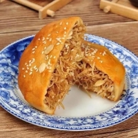

化州糖水
大多数人了解化州，都是从一碗糖水开始的。
化州盛产甘蔗，是蔗糖产业大市，也是国家级蔗糖生产基地，更是名副其实的“茂名糖罐子”。
而且化州糖水的品种更是众多，如：香芋西米露、绿豆沙 、番薯糖水 、绿豆海带糖水、清补凉、龟苓膏......
其中最受欢迎的当属椰汁香芋西米露，椰汁奶香味十足，香芋粉而嚼劲足，西米大颗饱满弹性好，每一口都是用舌尖感受甜蜜与香浓。
化州牛杂/牛腩
而化州另一个不得不说的经典，就是牛杂了，一口嚼劲、原汁原味，化州牛杂还亮相了央视《味道》。
化州的牛杂，可以说是牛杂界的“一股清流”，它与浓汁软绵的广式牛杂大有不同，化州牛杂用陈皮、八角、丁香等香料清炖而成，讲究火候，
通过炖煮时牛杂的肉香味与高汤的鲜甜味充分交融，保留了牛杂的原汁原味，使其吃起来鲜美有嚼劲。
而且化州的牛杂都是现剪现吃，牛腩入口满香、牛肠肥而不腻、牛筋爽口劲道......两个味盅里还放着辣与不辣的两种秘制调料，
不管是寒冬还是炎夏，大家围着满是牛杂的大铁锅而坐，这就是简单而又满足的化州生活。
当然，牛杂桌上少不了的还有化州牛腩粉。
化州牛腩粉的最大特色，就是秘方配制的香油，香而不燥，齿颊留香，而且化州的河粉都是手工制作，细软的河粉口感爽滑，配上醇香的汤头和劲道的牛腩牛杂，每一口都滋味十足。
香油鸡/隔水蒸鸡
说到原汁原味，化州的香油鸡、隔水蒸鸡，也绝对不会让你失望。
在广东人的饭桌上，最常说的一句话就是“无鸡不成宴”，其中白切鸡可谓是无人不知，
而化州白切鸡（香油鸡）更是以其油香、多汁、皮脆、肉嫩著名，它最大的特色就是用秘方配制的香油（花生油），
而熬鸡后的香油用来拌饭则是另一绝。
簸箕炊
还有粤西人最钟爱的小吃——簸箕炊，一道看似简单，却又风味十足的传统小吃。
 用簸箕为盛具而著称，洁白的簸箕炊被小镰刀割成菱格状，然后放上芝麻与蒜蓉（即蒜鸡油）蘸着吃，
入口细腻富有弹性，不过因蒜蓉有余味，所以也有不好此道者，故可用单纯放花生油所煮成的香油，其风味依旧。
用簸箕为盛具而著称，洁白的簸箕炊被小镰刀割成菱格状，然后放上芝麻与蒜蓉（即蒜鸡油）蘸着吃，
入口细腻富有弹性，不过因蒜蓉有余味，所以也有不好此道者，故可用单纯放花生油所煮成的香油，其风味依旧。
用簸箕为盛具而著称，洁白的簸箕炊被小镰刀割成菱格状，然后放上芝麻与蒜蓉（即蒜鸡油）蘸着吃，
入口细腻富有弹性，不过因蒜蓉有余味，所以也有不好此道者，故可用单纯放花生油所煮成的香油，其风味依旧。
拖罗饼/艾籺

 源于唐代贞观年间，是广东化州的传统风味小吃，被中国烹饪协会评为“中华名小吃”，其色泽金黄，皮脆酥香，内里添加了椰子丝、叉烧、伍仁、白芝麻等丰富的馅料。
用簸箕为盛具而著称，洁白的簸箕炊被小镰刀割成菱格状，然后放上芝麻与蒜蓉（即蒜鸡油）蘸着吃，
入口细腻富有弹性，不过因蒜蓉有余味，所以也有不好此道者，故可用单纯放花生油所煮成的香油，其风味依旧。
而正穷节吃艾籺（农历正月最后一天），艾籺有甜馅、咸馅之分，甜馅主要是白糖、花生、椰丝、芝麻、肥肉等，而咸馅的则用新鲜虾仔、生葱、新鲜萝卜丝或咸萝卜碎加肥肉、芝麻、花生等。
源于唐代贞观年间，是广东化州的传统风味小吃，被中国烹饪协会评为“中华名小吃”，其色泽金黄，皮脆酥香，内里添加了椰子丝、叉烧、伍仁、白芝麻等丰富的馅料。
用簸箕为盛具而著称，洁白的簸箕炊被小镰刀割成菱格状，然后放上芝麻与蒜蓉（即蒜鸡油）蘸着吃，
入口细腻富有弹性，不过因蒜蓉有余味，所以也有不好此道者，故可用单纯放花生油所煮成的香油，其风味依旧。
而正穷节吃艾籺（农历正月最后一天），艾籺有甜馅、咸馅之分，甜馅主要是白糖、花生、椰丝、芝麻、肥肉等，而咸馅的则用新鲜虾仔、生葱、新鲜萝卜丝或咸萝卜碎加肥肉、芝麻、花生等。
源于唐代贞观年间，是广东化州的传统风味小吃，被中国烹饪协会评为“中华名小吃”，其色泽金黄，皮脆酥香，内里添加了椰子丝、叉烧、伍仁、白芝麻等丰富的馅料。
用簸箕为盛具而著称，洁白的簸箕炊被小镰刀割成菱格状，然后放上芝麻与蒜蓉（即蒜鸡油）蘸着吃，
入口细腻富有弹性，不过因蒜蓉有余味，所以也有不好此道者，故可用单纯放花生油所煮成的香油，其风味依旧。
而正穷节吃艾籺（农历正月最后一天），艾籺有甜馅、咸馅之分，甜馅主要是白糖、花生、椰丝、芝麻、肥肉等，而咸馅的则用新鲜虾仔、生葱、新鲜萝卜丝或咸萝卜碎加肥肉、芝麻、花生等。